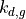
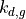

Central dogma simulator¶
Computes protein expression level (or protein copy number) for a generic
central dogma reaction system for a set of integration times
. The transcript rate constant
( ), transcript decay rate constant (), and the
translation power () are fixed for all simulations.
While the protein decay rate constant () changes to cover
the range of integration time.
), transcript decay rate constant (), and the
translation power () are fixed for all simulations.
While the protein decay rate constant () changes to cover
the range of integration time.
These simulations can take hours, depending on the parameters. Check out the script ./scripts/CentralDogmaSimulator.py which runs the same code from the command line.
import os,sys
import numpy as np
import scipy.stats as st
import math
import random as rand
import scripts.kMC as kMC
from scripts.simulation_data import simulation_data
Select the dataset for Gillespie simulation and the number of samples to obtain from Gillespie simulations. The central dogma rate constants, the number of input levels, and the sampling interval are already specified in the simulation_data.
selected_data = "test"
n_samples = 1000
data_directory = './simulation_results/'
try:
os.chdir(data_directory)
except OSError:
os.mkdir(data_directory)
os.chdir(data_directory)
expression_directory = selected_data.replace(' ','-')+'_samples'
try:
os.chdir(expression_directory)
except OSError:
os.mkdir(expression_directory)
os.chdir(expression_directory)
Select the frequency parameter, , or the rate at which the
operator state switches between ON (1) and OFF(0), and leakiness
 , or the probability of the operator state being ON in the
absence of the environmental input. is in the unit of
.
, or the probability of the operator state being ON in the
absence of the environmental input. is in the unit of
.
alpha = 1.0
l = 0.01
Read the central dogma rate constants for the selected dataset.
k_m = simulation_data[selected_data]['k_m']
k_dm = simulation_data[selected_data]['k_dm']
k_dgs = simulation_data[selected_data]['k_dg']
translation_power = simulation_data[selected_data]['translation power']
Perform Gillespie simulation of the generic central dogma reaction
system. For each integration time value, Gillespie simulations are
performed for a set of input values  , and the protein copy
number sampled from the stochastic trajectory is stored as the output,
which is lated used to compute the protein-level channel capacity,
.
, and the protein copy
number sampled from the stochastic trajectory is stored as the output,
which is lated used to compute the protein-level channel capacity,
.
for k_dg_i in range(0,len(k_dgs)):
k_dg = k_dgs[k_dg_i]
k_g = translation_power*k_dg
state = {}
state['O_on'] = 0
state['O_off'] = 1
state['m'] = 0
state['g'] = 0
central_dogma_rates = {}
central_dogma_rates['k_m'] = k_m
central_dogma_rates['k_dm'] = k_dm
central_dogma_rates['k_g'] = k_g
central_dogma_rates['k_dg'] = k_dg
g_samples = {}
m_samples = {}
X = np.linspace(0,1.0,int(simulation_data[selected_data]['input size'][k_dg_i]))
g_sample_array = np.zeros(shape=(n_samples,X.shape[0]))
dissipation = np.zeros(shape=(X.shape[0],))
t_sample = int(simulation_data[selected_data]['sample interval'][k_dg_i])
for i in range(0,X.shape[0]):
current_time = 0.0
event_counter = 0
last_sample_event = 0
# Transcription on or off
k_on = alpha*((1-l)*X[i] + l)
k_off = alpha*(1 - X[i])*(1 - l)
# Initial transcript count
m = int((k_m/k_dm)*k_on/(k_on + k_off))
m_samples[i] = [m]
g = int((k_g/k_dg)*(k_m/k_dm)*k_on/(k_on + k_off))
g_samples[i] = [g]
g_sample_array[0,i] = state['g']
state['O_on'] = 0
state['O_off'] = 1
state['m'] = m
state['g'] = g
g_sample_array[0,i] = state['g']
current_time = 0
samples = 1
central_dogma_rates['k_on'] = k_on
central_dogma_rates['k_off'] = k_off
propensities = kMC.compute_propensities(central_dogma_rates,state)
next_sample_time = t_sample
dissipation[i] = 0.0
while samples<n_samples:
propensities = kMC.compute_propensities(central_dogma_rates,state)
event, dt, event_prob = kMC.next_jump_and_event_type(propensities)
state = kMC.update_state(event,state)
rev_prob = kMC.reverse_event_prob(event,state,central_dogma_rates)
if event_prob>0.0 and rev_prob>0.0:
dissipation[i] += math.log(event_prob/rev_prob)
current_time += dt
event_counter += 1
if current_time>=next_sample_time:
m_samples[i].append(state['m'])
g_samples[i].append(state['g'])
next_sample_time = current_time + t_sample - (current_time - next_sample_time)
g_sample_array[samples,i] = state['g']
samples += 1
last_sample_event = event_counter
dissipation[i] *= 1.0/current_time
#print(X[i],' is completed: ',current_time,event_counter)
Tvalue = float("{:.1f}".format(k_dm/k_dg))
tfile = 'T'+str(Tvalue).replace('.','_')+'.csv'
np.savetxt(tfile,g_sample_array,delimiter=',')
print('Gillespie simulations for T=',Tvalue,'completed.')
Gillespie simulations for T= 1.0 completed.
Gillespie simulations for T= 2.5 completed.
Gillespie simulations for T= 5.0 completed.
Gillespie simulations for T= 10.0 completed.
Gillespie simulations for T= 25.0 completed.
Gillespie simulations for T= 50.0 completed.
Gillespie simulations for T= 100.0 completed.
Gillespie simulations for T= 250.0 completed.
Gillespie simulations for T= 500.0 completed.
Gillespie simulations for T= 1000.0 completed.
Gillespie simulations for T= 2500.0 completed.